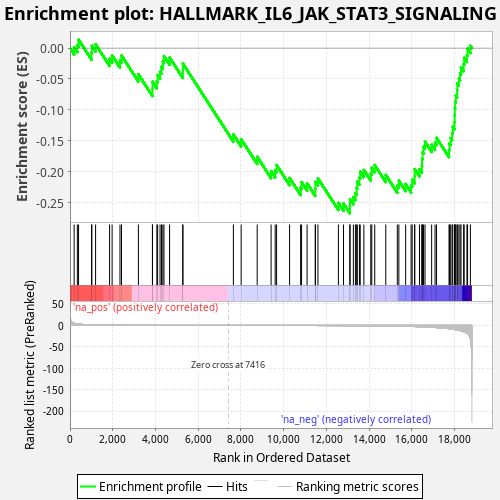
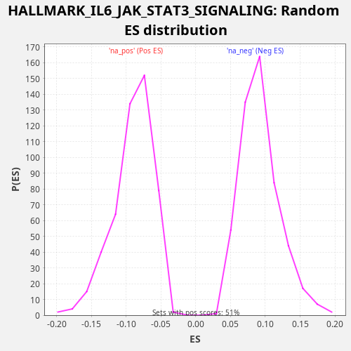

| Dataset | TCGA |
| Phenotype | NoPhenotypeAvailable |
| Upregulated in class | na_neg |
| GeneSet | HALLMARK_IL6_JAK_STAT3_SIGNALING |
| Enrichment Score (ES) | -0.26734376 |
| Normalized Enrichment Score (NES) | -2.9505503 |
| Nominal p-value | 0.0 |
| FDR q-value | 0.0 |
| FWER p-Value | 0.0 |

| SYMBOL | RANK IN GENE LIST | RANK METRIC SCORE | RUNNING ES | CORE ENRICHMENT | |
|---|---|---|---|---|---|
| 1 | TNFRSF21 | 193 | 4.791 | 0.0013 | No |
| 2 | BAK1 | 344 | 3.384 | 0.0049 | No |
| 3 | IL9R | 401 | 3.107 | 0.0136 | No |
| 4 | TNFRSF1A | 1009 | 1.340 | -0.0072 | No |
| 5 | PLA2G2A | 1023 | 1.318 | 0.0037 | No |
| 6 | STAM2 | 1198 | 1.086 | 0.0061 | No |
| 7 | ACVR1B | 1853 | 0.601 | -0.0172 | No |
| 8 | IL4R | 1972 | 0.546 | -0.0119 | No |
| 9 | IFNGR2 | 2340 | 0.408 | -0.0198 | No |
| 10 | IRF9 | 2412 | 0.384 | -0.0120 | No |
| 11 | TGFB1 | 3202 | 0.201 | -0.0425 | No |
| 12 | CD36 | 3860 | 0.116 | -0.0659 | No |
| 13 | IFNGR1 | 3861 | 0.116 | -0.0543 | No |
| 14 | IL7 | 4067 | 0.096 | -0.0536 | No |
| 15 | LTBR | 4104 | 0.093 | -0.0439 | No |
| 16 | TLR2 | 4216 | 0.085 | -0.0382 | No |
| 17 | IL10RB | 4282 | 0.080 | -0.0301 | No |
| 18 | CD9 | 4347 | 0.075 | -0.0219 | No |
| 19 | CD44 | 4399 | 0.072 | -0.0129 | No |
| 20 | CNTFR | 4663 | 0.055 | -0.0154 | No |
| 21 | IFNAR1 | 5283 | 0.027 | -0.0368 | No |
| 22 | LEPR | 5284 | 0.027 | -0.0251 | No |
| 23 | STAT3 | 7649 | -0.000 | -0.1397 | No |
| 24 | TYK2 | 8013 | -0.002 | -0.1475 | No |
| 25 | STAT2 | 8764 | -0.009 | -0.1759 | No |
| 26 | MYD88 | 9415 | -0.022 | -0.1990 | No |
| 27 | CXCL1 | 9607 | -0.027 | -0.1975 | No |
| 28 | EBI3 | 9672 | -0.028 | -0.1893 | No |
| 29 | HAX1 | 10281 | -0.051 | -0.2101 | No |
| 30 | PTPN2 | 10797 | -0.078 | -0.2260 | No |
| 31 | INHBE | 10842 | -0.081 | -0.2167 | No |
| 32 | IRF1 | 11100 | -0.098 | -0.2188 | No |
| 33 | PTPN1 | 11483 | -0.127 | -0.2276 | No |
| 34 | PTPN11 | 11490 | -0.128 | -0.2163 | No |
| 35 | FAS | 11608 | -0.139 | -0.2109 | No |
| 36 | IL17RA | 12566 | -0.263 | -0.2504 | No |
| 37 | JUN | 12805 | -0.308 | -0.2514 | No |
| 38 | PF4 | 13104 | -0.371 | -0.2557 | Yes |
| 39 | STAT1 | 13110 | -0.373 | -0.2444 | Yes |
| 40 | PIM1 | 13267 | -0.406 | -0.2411 | Yes |
| 41 | MAP3K8 | 13363 | -0.426 | -0.2345 | Yes |
| 42 | IL3RA | 13422 | -0.443 | -0.2260 | Yes |
| 43 | IL15RA | 13451 | -0.452 | -0.2158 | Yes |
| 44 | REG1A | 13551 | -0.480 | -0.2095 | Yes |
| 45 | CRLF2 | 13588 | -0.490 | -0.1998 | Yes |
| 46 | ACVRL1 | 13759 | -0.546 | -0.1972 | Yes |
| 47 | GRB2 | 14082 | -0.663 | -0.2028 | Yes |
| 48 | LTB | 14129 | -0.686 | -0.1936 | Yes |
| 49 | TNFRSF12A | 14268 | -0.753 | -0.1894 | Yes |
| 50 | CSF1 | 14784 | -1.042 | -0.2052 | Yes |
| 51 | CBL | 15325 | -1.449 | -0.2224 | Yes |
| 52 | IL13RA1 | 15397 | -1.523 | -0.2146 | Yes |
| 53 | IL6ST | 15715 | -1.868 | -0.2199 | Yes |
| 54 | SOCS3 | 15970 | -2.204 | -0.2218 | Yes |
| 55 | OSMR | 16020 | -2.274 | -0.2128 | Yes |
| 56 | A2M | 16137 | -2.452 | -0.2074 | Yes |
| 57 | PDGFC | 16139 | -2.460 | -0.1958 | Yes |
| 58 | CD14 | 16362 | -2.851 | -0.1960 | Yes |
| 59 | IL17RB | 16474 | -3.089 | -0.1903 | Yes |
| 60 | CSF2 | 16484 | -3.111 | -0.1792 | Yes |
| 61 | CCL7 | 16506 | -3.145 | -0.1687 | Yes |
| 62 | IL12RB1 | 16552 | -3.235 | -0.1594 | Yes |
| 63 | IL18R1 | 16621 | -3.390 | -0.1514 | Yes |
| 64 | CSF3R | 16932 | -4.157 | -0.1564 | Yes |
| 65 | SOCS1 | 17091 | -4.644 | -0.1532 | Yes |
| 66 | IL2RG | 17161 | -4.871 | -0.1452 | Yes |
| 67 | CCR1 | 17747 | -7.562 | -0.1648 | Yes |
| 68 | TNFRSF1B | 17766 | -7.650 | -0.1542 | Yes |
| 69 | TNF | 17824 | -7.978 | -0.1456 | Yes |
| 70 | CXCL13 | 17890 | -8.373 | -0.1374 | Yes |
| 71 | IL1B | 17920 | -8.570 | -0.1273 | Yes |
| 72 | IL1R1 | 18001 | -9.126 | -0.1200 | Yes |
| 73 | IL1R2 | 18010 | -9.187 | -0.1088 | Yes |
| 74 | ITGA4 | 18018 | -9.286 | -0.0975 | Yes |
| 75 | PIK3R5 | 18032 | -9.451 | -0.0866 | Yes |
| 76 | CXCL10 | 18064 | -9.663 | -0.0766 | Yes |
| 77 | CXCL3 | 18126 | -10.290 | -0.0682 | Yes |
| 78 | IL2RA | 18132 | -10.358 | -0.0569 | Yes |
| 79 | IL6 | 18206 | -11.074 | -0.0492 | Yes |
| 80 | CSF2RA | 18262 | -11.704 | -0.0405 | Yes |
| 81 | ITGB3 | 18307 | -12.343 | -0.0312 | Yes |
| 82 | CXCL9 | 18429 | -14.155 | -0.0260 | Yes |
| 83 | CXCL11 | 18454 | -14.657 | -0.0157 | Yes |
| 84 | HMOX1 | 18585 | -18.346 | -0.0110 | Yes |
| 85 | CD38 | 18614 | -19.426 | -0.0008 | Yes |
| 86 | CSF2RB | 18746 | -30.966 | 0.0038 | Yes |

{kind=link}
{kind=link}